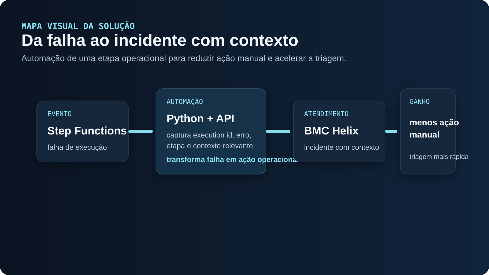

Quando o material original comprova uma implementação, eu descrevo como parte do caso. Quando discuto melhorias, alternativas ou mecanismos não documentados, marco explicitamente como análise técnica, trade-off ou evolução proposta.

- Deixar claro onde a decisão acontece
- Separar processamento, controle e publicação
- Tratar falhas sem confundir tipos de erro
- Facilitar operação, auditoria e evolução
01 / ESCOPO DOCUMENTADO
Automatizar uma etapa que dependia de ação manual
O caso documenta uma prova de conceito em Python que capturava o contexto de falhas em Step Functions e usava a API REST do BMC Helix, com conta de serviço, para criar um incidente. A solução evoluiu para uso em produção.
O material não informa detalhes de autenticação, payload completo, política de deduplicação nem métricas de redução de tempo. Essas partes são tratadas abaixo como desenho técnico recomendado.
02 / EVENTO DE FALHA
Separar detectar falha de abrir chamado
A máquina de estados conhece execution ARN/id, estado, timestamps e erro. Eu transformaria isso em um evento normalizado com workflow, ambiente, execução, etapa, código de erro e mensagem sanitizada. Um componente Python ficaria responsável por mapear esse evento para o contrato da API do Helix.
Trade-off: chamar o Helix diretamente no fluxo é simples, mas acopla processamento e ITSM. Uma fila ou barramento entre os dois aumenta resiliência e desacoplamento, ao custo de mais infraestrutura.
03 / API E SEGURANÇA
Conta de serviço e segredo não devem morar no código
Credenciais devem ser recuperadas de um secret manager e rotacionadas. O cliente HTTP precisa definir timeout, retry controlado e tratamento explícito para 4xx/5xx. O payload deve conter contexto suficiente para investigação, sem vazar dados sensíveis do processamento.
Trade-off: mensagens muito completas ajudam o suporte, mas podem expor conteúdo operacional. O ideal é enviar identificadores e links para logs, não despejar dados no ticket.
04 / DEDUPLICAÇÃO
Uma mesma falha não pode gerar dezenas de incidentes
O caso não documenta deduplicação. Eu criaria uma chave como ambiente + workflow + erro normalizado + janela de tempo, persistindo o ticket aberto. Novas ocorrências poderiam atualizar ou correlacionar o incidente existente em vez de criar outro.
Trade-off: deduplicar demais pode esconder falhas independentes; deduplicar de menos gera alert fatigue. A chave deve preservar a unidade operacional que realmente precisa de atendimento.
05 / RESILIÊNCIA
E se o Helix estiver indisponível justamente quando o pipeline falhar?
A criação do incidente não deveria mascarar a falha original. Eu registraria o erro de integração com o ITSM e, em arquitetura mais robusta, colocaria o evento em uma fila/DLQ para nova tentativa assíncrona.
Trade-off: retry síncrono é mais simples, mas alonga a execução e pode falhar junto com o sistema externo. Assíncrono é mais resiliente, porém exige monitorar também a fila e os consumidores.
06 / OBSERVABILIDADE
Rastrear pipeline e ticket como uma única cadeia
Eu registraria execution_id, correlation_id e incident_id. Métricas importantes: falhas detectadas, incidentes criados, atualizados, erros de API e tempo entre falha e registro no ITSM. Isso permite provar que a automação está funcionando e localizar gargalos.
O resultado original é operacional: uma etapa manual foi automatizada. Não há números publicados, então métricas quantitativas não devem ser inventadas.
07 / EVOLUÇÃO
Da automação pontual para um padrão de Data Operations
Se várias pipelines precisassem do mesmo comportamento, eu transformaria a lógica em um serviço ou componente reutilizável com regras de severidade, roteamento e templates por domínio. Isso reduz código duplicado e padroniza incidentes.
Trade-off: um serviço central melhora governança, mas vira dependência compartilhada. Para poucos fluxos, uma integração local pode continuar sendo a solução mais econômica.